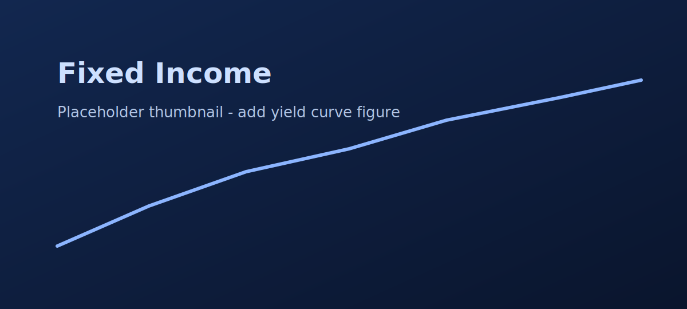
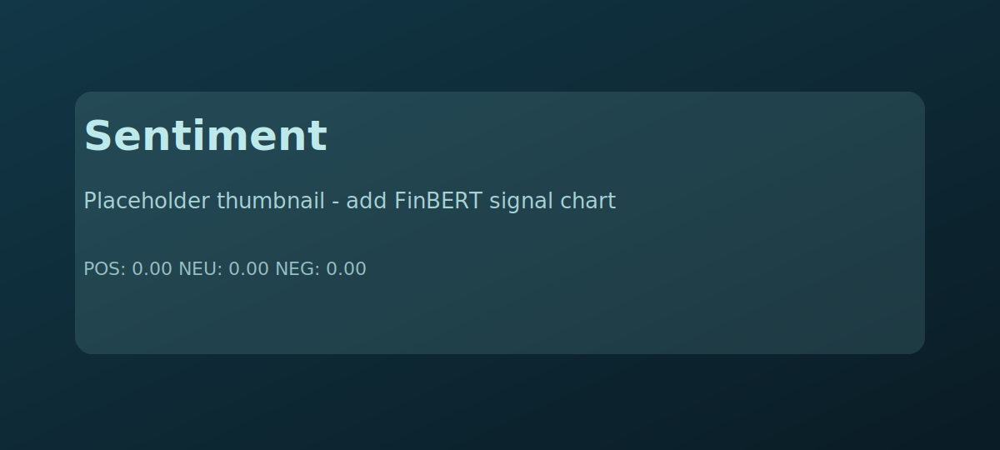

Finance & Quantitative Analysis
State-space modelling for rates, calibration-aware risk, and alternative-data signals
Three notebook-driven projects demonstrating yield-curve & fixed-income analysis, comparative VaR methods, and a FinBERT sentiment pipeline. Notebooks are runnable — links below.
Note: metrics shown were extracted from notebooks in finance/notebooks/. If a number is unverified at runtime it is labelled unverified and the notebook to run is linked.
Key results (at a glance)
-
$291,342
1-day 95% VaR (Treasury portfolio)
-
6,250+
News articles processed (FinBERT)
-
2 factors / 97%
PCA for yield-curve (variance explained)
Featured projects

Fixed Income — Nelson-Siegel & VaR
Objective: model U.S. Treasury curves and compute portfolio-level VaR using factor decomposition and PCA.
- Data: FRED yield series (notebooks include FRED fetch; API key required to run).
- Methods: Nelson-Siegel curve fits, PCA factor decomposition, VaR via PCA-driven exposures.
- Result: 1-day 95% VaR = $291,342 (see notebook for backtest details).
Open notebook ·
Quick readme
Market Risk — VaR methodologies & robustness
Objective: implement and compare Historical, Parametric (Normal & t), and Monte Carlo VaR for risky assets (example: BTC-USD).
- Comparative study of tail fit and simulation methods; distribution diagnostics included.
- Monte Carlo & parametric implementations with backtesting cells (see MarketRisk.ipynb).
- Results summary (notebook): Historical 95% VaR ≈ −6.0% · Monte Carlo 95% VaR ≈ −3.23% (sample wallet).
Open notebook

Alternative Data — Financial news sentiment
Objective: ingest news (GDELT), apply FinBERT, and correlate weekly sentiment with asset returns.
- Pipeline: GDELT → article extraction → FinBERT → weekly aggregation; includes bootstrap CIs and structural-break diagnostics.
- Performance: 6,250+ articles processed (notebook cells show sampling & aggregation).
- Notes: FinBERT inference requires model weights and may be GPU-accelerated in Colab.
Open notebook
Technical skills (quick)
Quant: yield-curve modelling, VaR, risk attribution ·
Stats: PCA, bootstrap CIs, structural-break detection ·
ML & NLP: FinBERT, PyTorch inference ·
Engineering: Python, pandas, matplotlib, reproducible notebooks
Hiring manager TL;DR
30 days: deliver reproducible backtests and clear metric dashboards for ongoing models. 90 days: productionise the best-performing risk pipeline with CI, monitoring, and retraining schedule.